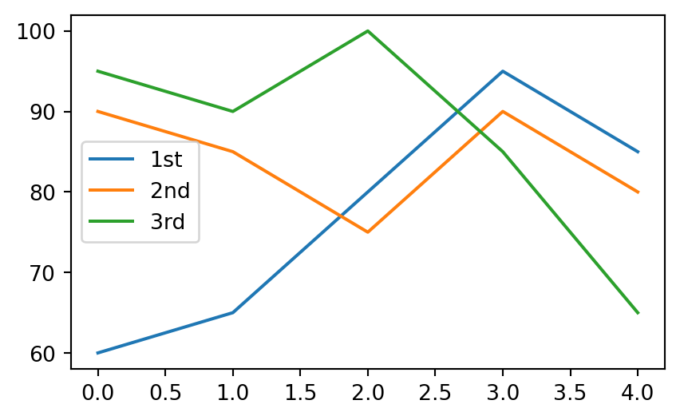
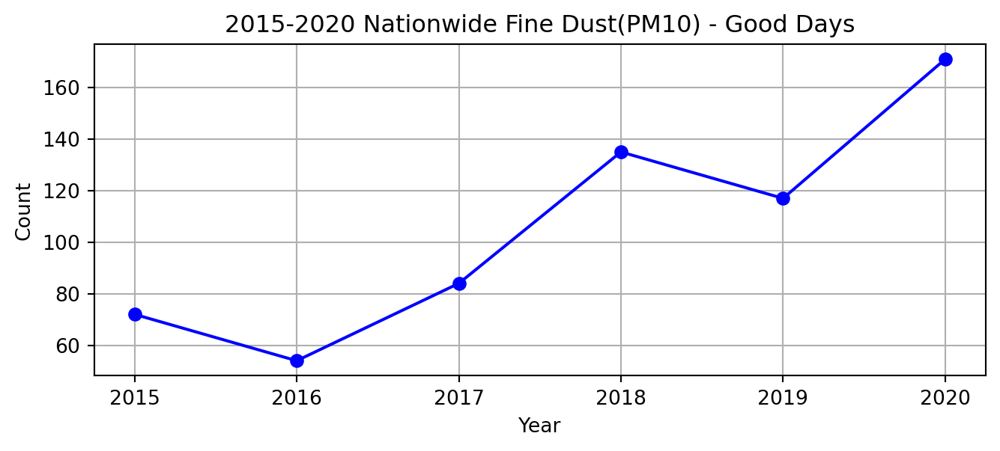
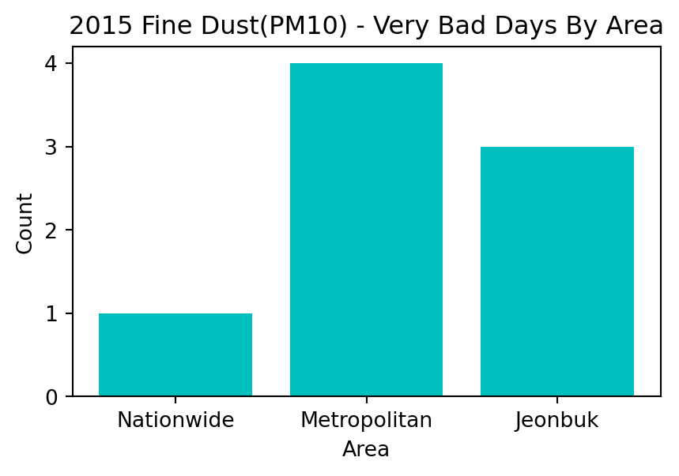
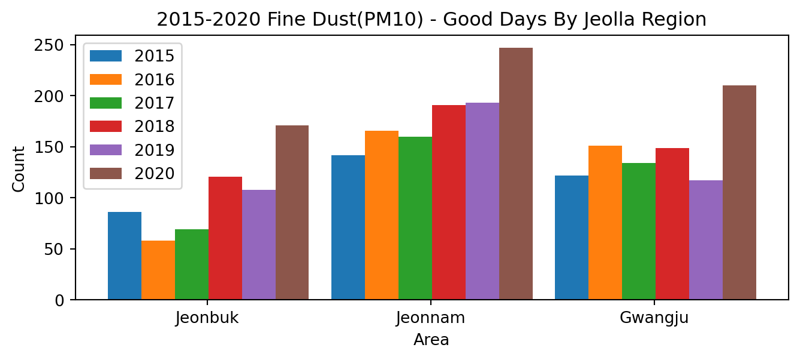
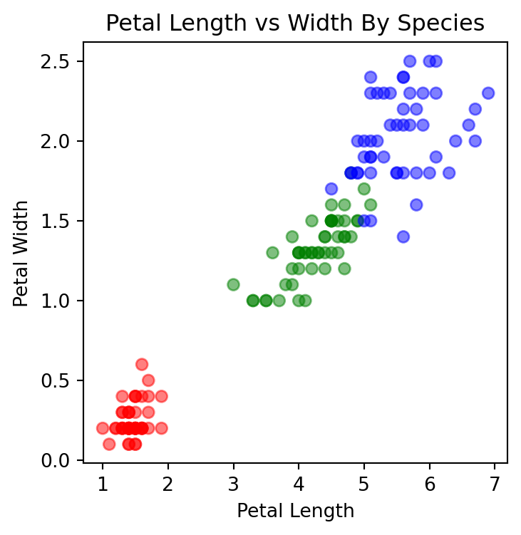
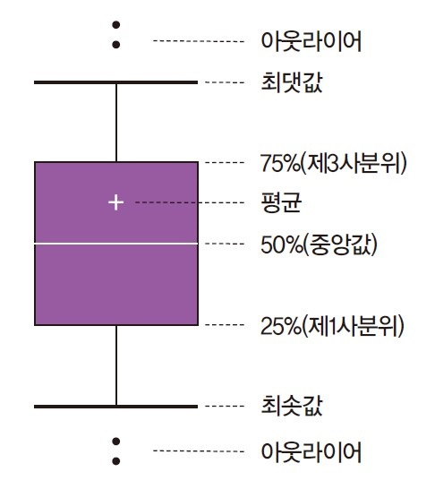
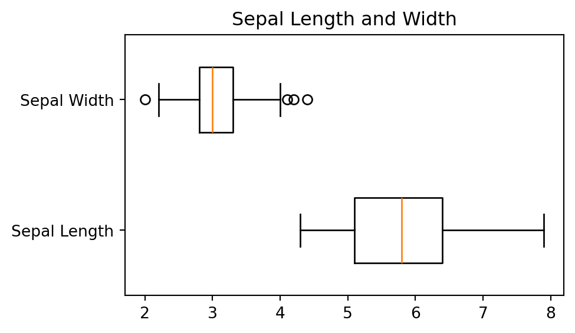

# Matplotlib 라이브러리 설치
#!pip install matplotlib
- Matplotlib
5.1. 데이터 시각화
- 데이터 시각화(data visualization)
- 데이터 분석 결과를 쉽게 이해할 수 있도록 표현하고 전달되는 과정
- 복잡한 정보를 한 눈에 파악하고, 숨겨진 패턴이나 관계를 드러냄
- 탐색적 자료 분석(EDA), 결과 해석, 의사결정 등에 폭넓게 활용
- 데이터 시각화 단계
- 시각화 라이브러리 불러오기
- x축, y축에 표시할 데이터 정하기
plot()함수에 데이터 입력하기- 그래프 보여주기
5.2. 시각화 옵션
- Matplotlib
- 넘파이 배열을 기반으로 개발된 다중 플랫폼 데이터 시각화 라이브러리
- 다양한 운영체제와 그래픽 백엔드에서 안정적으로 작동함
- 일반적으로 Pandas의 데이터프레임과 함께 자주 사용됨
# Matplotlib 라이브러리의 pylot 모듈 불러오기
import matplotlib.pyplot as pltimport numpy as np
import pandas as pd# 시각화 옵션1 : 제목
xdata = [3, 5, 7, 9]
ydata = [2, 4, 6, 8]
plt.figure(figsize=(5, 3))
plt.title('Line Graph')
plt.plot(xdata, ydata)
plt.show()# 시각화 옵션2 : 범례
# plot()의 label 속성에 범례에 표시할 문자열을 작성
data1 = [1, 3, 5, 7]
data2 = [9, 7, 5, 3]
plt.figure(figsize=(5, 3))
plt.title('Legend Properties')
plt.plot(data1, label='Salary')
plt.plot(data2, label='Prices')
plt.legend()
plt.show()
# 시각화 옵션3 : 색상
# plot()의 color 속성에 색상 설정
xdata = [3, 5, 7, 9]
ydata = [1, 3, 5, 7]
plt.figure(figsize=(5, 3))
plt.title('Color Properties')
plt.plot(xdata, ydata, color='green')
plt.show()# 시각화 옵션4 : x축 및 y축 이름
xdata = [3, 5, 7, 9]
ydata = [1, 3, 5, 7]
plt.figure(figsize=(5, 3))
plt.title('Axis name Properties')
plt.plot(xdata, ydata)
plt.xlabel('X value')
plt.ylabel('Y value')
plt.show()# 시각화 옵션5 : 그래프 선 모양
# plot()의 linestyle 속성에 선 모양을 '-', '--', '-.', ':' 등으로 설정
data1 = [1, 3, 5, 7]
data2 = [9, 7, 5, 3]
plt.figure(figsize=(5, 3))
plt.title('Line shape Properties')
plt.plot(data1, color='b', linestyle='--', label='dashed')
plt.plot(data2, 'r:', label='dotted')
plt.legend()
plt.show()# 시각화 옵션6 : 그림 범위 지정
xdata = [15, 25, 35, 45]
ydata = [2, 4, 6, 8]
plt.figure(figsize=(5, 3))
plt.title('X, Y range Properties')
plt.plot(xdata, ydata, 'b--o', markersize=7)
plt.xlim(10, 50)
plt.ylim(0, 10)
plt.show()# 시각화 옵션7 : 내장 시각화 옵션
# Pandas 라이브러리의 plot() 메소드를 이용하여 그래프를 그릴 수 있음
my_score = [[60, 90, 95], [65, 85, 90], [80, 75, 100],
[95, 90, 85], [85, 80, 65]]
subject = ['1st', '2nd', '3rd']
df = pd.DataFrame(my_score, columns=subject)
# 선 그래프
df.plot(kind='line', figsize=(5, 3))
plt.show()
# 상자수염 그래프
df.plot(kind='box', figsize=(5, 3))
plt.show()# SciPy 라이브러리 설치
#!pip install scipy# 커널 밀도 그래프
df.plot(kind='kde', figsize=(5, 3))
plt.show()
5.3. 선 그래프
- 일반적으로 시간에 따라 연속적으로 변화하는 데이터를 시각화할 때 사용함
- x축에는 시간, y축에는 수치형 변수를 지정함
- 시간의 흐름에 따라 데이터의 값은 증가/감소하는가?
- 계절에 따른 특정 패턴이 존재하는가? 눈에 띄는 변화 시점이 있는가?
- [데이터] 에어코리아에서 제공하는 2015-2020년 연도별, 시도별, 미세먼지 등급별 일수
- 미세먼지 등급 : 0-30(좋음), 31-80(보통), 81-150(나쁨), 151 이상(매우 나쁨)
- [실습파일] 04_data1.csv
# 데이터 불러오기 : area' 변수를 행 인덱스로 지정
data = pd.read_csv('./data/04_data1.csv', index_col='area')
data.head()| 2015_good | 2016_good | 2017_good | 2018_good | 2019_good | 2020_good | 2015_common | 2016_common | 2017_common | 2018_common | ... | 2017_bad | 2018_bad | 2019_bad | 2020_bad | 2015_verybad | 2016_verybad | 2017_verybad | 2018_verybad | 2019_verybad | 2020_verybad | |
|---|---|---|---|---|---|---|---|---|---|---|---|---|---|---|---|---|---|---|---|---|---|
| area | |||||||||||||||||||||
| Nationwide | 72.0 | 54 | 84 | 135 | 117 | 171 | 267.0 | 297 | 265 | 209 | ... | 14 | 21 | 16 | 0 | 1.0 | 2 | 2 | 0 | 1 | 0 |
| Metropolitan | 72.0 | 45 | 77 | 126 | 109 | 150 | 259.0 | 290 | 260 | 217 | ... | 26 | 22 | 27 | 4 | 4.0 | 2 | 2 | 0 | 3 | 0 |
| Seoul | 97.0 | 65 | 113 | 140 | 139 | 168 | 243.0 | 277 | 230 | 204 | ... | 20 | 21 | 25 | 5 | 4.0 | 1 | 2 | 0 | 3 | 0 |
| Busan | 102.0 | 89 | 86 | 136 | 163 | 208 | 242.0 | 259 | 269 | 212 | ... | 10 | 16 | 9 | 2 | 1.0 | 2 | 0 | 1 | 0 | 0 |
| Daegu | 90.0 | 103 | 111 | 155 | 148 | 176 | 248.0 | 246 | 244 | 196 | ... | 10 | 13 | 17 | 4 | 1.0 | 1 | 0 | 1 | 0 | 0 |
5 rows × 24 columns
# '2015-2020년 미세먼지 좋음' 일수만 가져오기
data_good = data.copy()
data_good = data_good.loc[:, '2015_good':'2020_good']
data_good| 2015_good | 2016_good | 2017_good | 2018_good | 2019_good | 2020_good | |
|---|---|---|---|---|---|---|
| area | ||||||
| Nationwide | 72.0 | 54 | 84 | 135 | 117 | 171 |
| Metropolitan | 72.0 | 45 | 77 | 126 | 109 | 150 |
| Seoul | 97.0 | 65 | 113 | 140 | 139 | 168 |
| Busan | 102.0 | 89 | 86 | 136 | 163 | 208 |
| Daegu | 90.0 | 103 | 111 | 155 | 148 | 176 |
| Incheon | 67.0 | 49 | 78 | 140 | 115 | 182 |
| Gwangju | 122.0 | 151 | 134 | 149 | 117 | 210 |
| Daejeon | 111.0 | 92 | 83 | 121 | 143 | 182 |
| Ulsan | 101.0 | 101 | 104 | 162 | 173 | 206 |
| Sejong | NaN | 65 | 69 | 130 | 127 | 165 |
| Gyeonggi | 65.0 | 45 | 59 | 123 | 97 | 137 |
| Gangwon | 77.0 | 65 | 108 | 150 | 159 | 219 |
| Chungbuk | 90.0 | 99 | 106 | 117 | 113 | 164 |
| Chungnam | 94.0 | 65 | 74 | 144 | 96 | 145 |
| Jeonbuk | 86.0 | 58 | 69 | 121 | 108 | 171 |
| Jeonnam | 142.0 | 166 | 160 | 191 | 193 | 247 |
| Gyeongbuk | 101.0 | 123 | 124 | 129 | 142 | 212 |
| Gyeongnam | 76.0 | 75 | 93 | 136 | 136 | 220 |
| Jeju | 84.0 | 138 | 166 | 202 | 176 | 220 |
# 행렬 전환(transpose)
# 인덱스는 열 이름이 되고, 열 이름은 인덱스가 됨
data_good = data_good.T
data_good| area | Nationwide | Metropolitan | Seoul | Busan | Daegu | Incheon | Gwangju | Daejeon | Ulsan | Sejong | Gyeonggi | Gangwon | Chungbuk | Chungnam | Jeonbuk | Jeonnam | Gyeongbuk | Gyeongnam | Jeju |
|---|---|---|---|---|---|---|---|---|---|---|---|---|---|---|---|---|---|---|---|
| 2015_good | 72.0 | 72.0 | 97.0 | 102.0 | 90.0 | 67.0 | 122.0 | 111.0 | 101.0 | NaN | 65.0 | 77.0 | 90.0 | 94.0 | 86.0 | 142.0 | 101.0 | 76.0 | 84.0 |
| 2016_good | 54.0 | 45.0 | 65.0 | 89.0 | 103.0 | 49.0 | 151.0 | 92.0 | 101.0 | 65.0 | 45.0 | 65.0 | 99.0 | 65.0 | 58.0 | 166.0 | 123.0 | 75.0 | 138.0 |
| 2017_good | 84.0 | 77.0 | 113.0 | 86.0 | 111.0 | 78.0 | 134.0 | 83.0 | 104.0 | 69.0 | 59.0 | 108.0 | 106.0 | 74.0 | 69.0 | 160.0 | 124.0 | 93.0 | 166.0 |
| 2018_good | 135.0 | 126.0 | 140.0 | 136.0 | 155.0 | 140.0 | 149.0 | 121.0 | 162.0 | 130.0 | 123.0 | 150.0 | 117.0 | 144.0 | 121.0 | 191.0 | 129.0 | 136.0 | 202.0 |
| 2019_good | 117.0 | 109.0 | 139.0 | 163.0 | 148.0 | 115.0 | 117.0 | 143.0 | 173.0 | 127.0 | 97.0 | 159.0 | 113.0 | 96.0 | 108.0 | 193.0 | 142.0 | 136.0 | 176.0 |
| 2020_good | 171.0 | 150.0 | 168.0 | 208.0 | 176.0 | 182.0 | 210.0 | 182.0 | 206.0 | 165.0 | 137.0 | 219.0 | 164.0 | 145.0 | 171.0 | 247.0 | 212.0 | 220.0 | 220.0 |
# 열 이름 상단의 이름(label) 삭제
data_good.columns.name = ''
# 인덱스를 연도(2015-2020)로 수정
data_good.index = range(2015, 2021)
data_good| Nationwide | Metropolitan | Seoul | Busan | Daegu | Incheon | Gwangju | Daejeon | Ulsan | Sejong | Gyeonggi | Gangwon | Chungbuk | Chungnam | Jeonbuk | Jeonnam | Gyeongbuk | Gyeongnam | Jeju | |
|---|---|---|---|---|---|---|---|---|---|---|---|---|---|---|---|---|---|---|---|
| 2015 | 72.0 | 72.0 | 97.0 | 102.0 | 90.0 | 67.0 | 122.0 | 111.0 | 101.0 | NaN | 65.0 | 77.0 | 90.0 | 94.0 | 86.0 | 142.0 | 101.0 | 76.0 | 84.0 |
| 2016 | 54.0 | 45.0 | 65.0 | 89.0 | 103.0 | 49.0 | 151.0 | 92.0 | 101.0 | 65.0 | 45.0 | 65.0 | 99.0 | 65.0 | 58.0 | 166.0 | 123.0 | 75.0 | 138.0 |
| 2017 | 84.0 | 77.0 | 113.0 | 86.0 | 111.0 | 78.0 | 134.0 | 83.0 | 104.0 | 69.0 | 59.0 | 108.0 | 106.0 | 74.0 | 69.0 | 160.0 | 124.0 | 93.0 | 166.0 |
| 2018 | 135.0 | 126.0 | 140.0 | 136.0 | 155.0 | 140.0 | 149.0 | 121.0 | 162.0 | 130.0 | 123.0 | 150.0 | 117.0 | 144.0 | 121.0 | 191.0 | 129.0 | 136.0 | 202.0 |
| 2019 | 117.0 | 109.0 | 139.0 | 163.0 | 148.0 | 115.0 | 117.0 | 143.0 | 173.0 | 127.0 | 97.0 | 159.0 | 113.0 | 96.0 | 108.0 | 193.0 | 142.0 | 136.0 | 176.0 |
| 2020 | 171.0 | 150.0 | 168.0 | 208.0 | 176.0 | 182.0 | 210.0 | 182.0 | 206.0 | 165.0 | 137.0 | 219.0 | 164.0 | 145.0 | 171.0 | 247.0 | 212.0 | 220.0 | 220.0 |
# 선 그래프1 : 2015-2020 전국 미세먼지(PM10) 좋음 일수 변화 추이
plt.figure(figsize=(8, 3))
plt.title('2015-2020 Nationwide Fine Dust(PM10) - Good Days')
plt.plot(data_good['Nationwide'], color='b', marker='o')
plt.xlabel('Year')
plt.ylabel('Count')
plt.grid()
plt.show()
# 선 그래프2 : 2015-2020 전국, 수도권, 전북 미세먼지(PM10) 좋음 일수 변화 추이
plt.figure(figsize=(8, 3))
plt.title('2015-2020 Fine Dust(PM10) - Good Days By Area')
for area in ['Nationwide', 'Metropolitan', 'Jeonbuk']:
plt.plot(data_good[area], marker='o', label=area)
plt.xlabel('Year')
plt.ylabel('Count')
plt.legend()
plt.grid()
plt.show()5.4. 막대 그래프
- 일반적으로 집단 간 비교나 범주형 변수를 시각화할 때 사용함
- 가독성 측면에서 항목의 개수가 적으면 세로 막대, 많으면 가로 막대가 유리함
# 전국, 수도권, 전북의 '2015년 미세먼지 매우 나쁨' 일수만 가져오기
data2015_verybad = data.copy()
data2015_verybad = data2015_verybad.loc[['Nationwide', 'Metropolitan', 'Jeonbuk'], '2015_verybad']
data2015_verybadarea
Nationwide 1.0
Metropolitan 4.0
Jeonbuk 3.0
Name: 2015_verybad, dtype: float64# 막대 그래프1 : 2015년 전국, 수도권, 전북 미세먼지(PM10) 매우 나쁨 일수 비교
plt.figure(figsize=(5, 3))
plt.title('2015 Fine Dust(PM10) - Very Bad Days By Area')
plt.bar(data2015_verybad.index, data2015_verybad, color='c')
plt.xlabel('Area')
plt.ylabel('Count')
plt.show()
# 전라권의 '2015-2020년 미세먼지 좋음' 일수만 가져오기
data6 = data.copy()
data6 = data6.loc[['Jeonbuk', 'Jeonnam', 'Gwangju'], '2015_good':'2020_good']
data6| 2015_good | 2016_good | 2017_good | 2018_good | 2019_good | 2020_good | |
|---|---|---|---|---|---|---|
| area | ||||||
| Jeonbuk | 86.0 | 58 | 69 | 121 | 108 | 171 |
| Jeonnam | 142.0 | 166 | 160 | 191 | 193 | 247 |
| Gwangju | 122.0 | 151 | 134 | 149 | 117 | 210 |
# 막대 그래프2 : 2015-2020 전라권 미세먼지(PM10) 좋음 일수 비교
plt.figure(figsize=(8, 3))
plt.title('2015-2020 Fine Dust(PM10) - Good Days By Jeolla Region')
index = np.arange(3)
for year in data6.columns:
plt.bar(index, data6[year], width=0.15, label=year.split("_")[0])
index = index + 0.15
plt.xlabel('Area')
plt.ylabel('Count')
plt.xticks(index-0.53, data6.index)
plt.legend()
plt.show()
# 17개 시도의 '2020년 미세먼지 나쁨' 일수만 가져오기
data2020_bad = data.copy()
data2020_bad = data2020_bad.loc['Seoul':, '2020_bad']
data2020_badarea
Seoul 5
Busan 2
Daegu 4
Incheon 2
Gwangju 0
Daejeon 1
Ulsan 2
Sejong 4
Gyeonggi 6
Gangwon 3
Chungbuk 3
Chungnam 6
Jeonbuk 1
Jeonnam 0
Gyeongbuk 2
Gyeongnam 0
Jeju 2
Name: 2020_bad, dtype: int64# '2020년 미세먼지 나쁨' 일수를 기준으로 오름차순 정렬
data2020_bad.sort_values(inplace=True)
data2020_badarea
Gwangju 0
Gyeongnam 0
Jeonnam 0
Daejeon 1
Jeonbuk 1
Jeju 2
Busan 2
Incheon 2
Ulsan 2
Gyeongbuk 2
Gangwon 3
Chungbuk 3
Daegu 4
Sejong 4
Seoul 5
Chungnam 6
Gyeonggi 6
Name: 2020_bad, dtype: int64type(data2020_bad)pandas.core.series.Series# 가로형 막대 그래프 : 2020년 시도별 미세먼지(PM10) 나쁨 일수 비교
plt.figure(figsize=(4, 4))
plt.title('2020 Fine Dust(PM10) - Bay Days By Area')
plt.barh(data2020_bad.index, data2020_bad)
plt.xlabel('Count')
plt.ylabel('Area')
plt.show()# 특·광역시의 '2017-2020년 미세먼지 보통' 일수만 가져오기
data4 = data.copy()
data4 = data4.loc['Seoul':'Ulsan', '2017_common':'2020_common']
data4| 2017_common | 2018_common | 2019_common | 2020_common | |
|---|---|---|---|---|
| area | ||||
| Seoul | 230 | 204 | 198 | 193 |
| Busan | 269 | 212 | 193 | 156 |
| Daegu | 244 | 196 | 200 | 186 |
| Incheon | 264 | 207 | 227 | 182 |
| Gwangju | 216 | 193 | 227 | 156 |
| Daejeon | 268 | 219 | 198 | 183 |
| Ulsan | 250 | 184 | 181 | 158 |
# 누적 막대 그래프 : 2017-2020 특·광역시 미세먼지(PM10) 보통 일수 비교
plt.figure(figsize=(8, 3))
plt.title('2017-2020 Fine Dust(PM10) - Common Days By Major City')
index = np.arange(7)
left = np.zeros(len(data4))
for year in data4.columns:
plt.barh(index, data4[year], left=left, label=year.split("_")[0])
left = left + data4[year]
plt.xlim(0, 1000)
plt.xlabel('Count')
plt.ylabel('Area')
plt.yticks(index, data4.index)
plt.legend()
plt.show()5.5. 산점도
- 두 수치형 변수 간 관계를 시각화할 때 사용함
- 데이터의 분포, 이상값, 변수 간 상관관계, 그룹화된 패턴 등을 직관적으로 파악할 수 있음
- [데이터] 캐글에서 제공하는 붓꽃 데이터
- SepalLength(꽃받침 길이), SepalWidth(꽃받침 너비), PetalLength(꽃잎 길이), PetalWidth(꽃잎 너비), Species(품종)
- [실습파일] 04_data2.csv
# 데이터 불러오기
data = pd.read_csv('./data/04_data2.csv')
data.head()| SepalLength | SepalWidth | PetalLength | PetalWidth | Species | |
|---|---|---|---|---|---|
| 0 | 5.1 | 3.5 | 1.4 | 0.2 | setosa |
| 1 | 4.9 | 3.0 | 1.4 | 0.2 | setosa |
| 2 | 4.7 | 3.2 | 1.3 | 0.2 | setosa |
| 3 | 4.6 | 3.1 | 1.5 | 0.2 | setosa |
| 4 | 5.0 | 3.6 | 1.4 | 0.2 | setosa |
# 산점도1 : 꽃잎 길이와 꽃잎 너비의 관계
# 꽃잎 길이가 길수록 꽆잎 너비도 대체로 증가하는 경향이 있음
plt.figure(figsize=(4, 4))
plt.title('Petal Length vs Width')
plt.scatter(data['PetalLength'], data['PetalWidth'])
plt.xlabel('Petal Length')
plt.ylabel('Petal Width')
plt.show()# 산점도2 : 꽃잎 길이와 꽃잎 너비, 품종의 관계
# 각 품종별로 꽃잎 길이와 너비가 뚜렷이 구분됨
# setosa는 작고 좁은 꽃잎, virginica는 크고 넓은 꽃잎을 가짐
plt.figure(figsize=(4, 4))
plt.title('Petal Length vs Width By Species')
plt.scatter(data['PetalLength'], data['PetalWidth'], alpha = 0.5,
c=data['Species'].map({'setosa': 'red', 'versicolor': 'green', 'virginica': 'blue'}))
plt.xlabel('Petal Length')
plt.ylabel('Petal Width')
plt.show()
5.6. 히스토그램
- 수치형 변수의 분포를 시각화할 때 사용함
- 데이터를 일정한 구간(bin)으로 나누고, 각 구간에 속하는 값들의 빈도를 막대의 높이로 나타냄
# 히스토그램 : setosa 품종의 꽃잎 길이 분포
# setosa 품종의 꽃잎 길이는 1.0~1.9cm 사이에 분포함
# 데이터는 대부분 1.5cm 주변에 집중되어 있으며, 대칭에 가까운 형태로 나타남
setosa = data.loc[data['Species']=='setosa',]
plt.figure(figsize=(5, 3))
plt.title('Distribution of Petal Length in Iris Setosa')
plt.hist(setosa['PetalLength'], bins=8, edgecolor='black')
plt.xlabel('Petal Length')
plt.ylabel('Count')
plt.show()5.7. 상자수염 그래프
- 수치형 변수의 분포를 시각화할 때 사용함
- 다섯 숫자 요약값을 기반으로 이상값, 분포의 비대칭 여부 등을 직관적으로 파악할 수 있음

# 상자수염 그래프 : 꽃받침 길이와 너비의 분포 비교
# 꽃받침 길이는 꽃받침 너비보다 전체적으로 큰 값을 가지며, 변동 폭도 더 큼
# 꽃받침 너비는 상대적으로 산포가 작고, 일부 이상값(outlier)이 존재함
plt.figure(figsize=(5, 3))
plt.boxplot([data['SepalLength'], data['SepalWidth']],
tick_labels=['Sepal Length', 'Sepal Width'],
vert=False, widths=0.5)
plt.title('Sepal Length and Width')
plt.show()